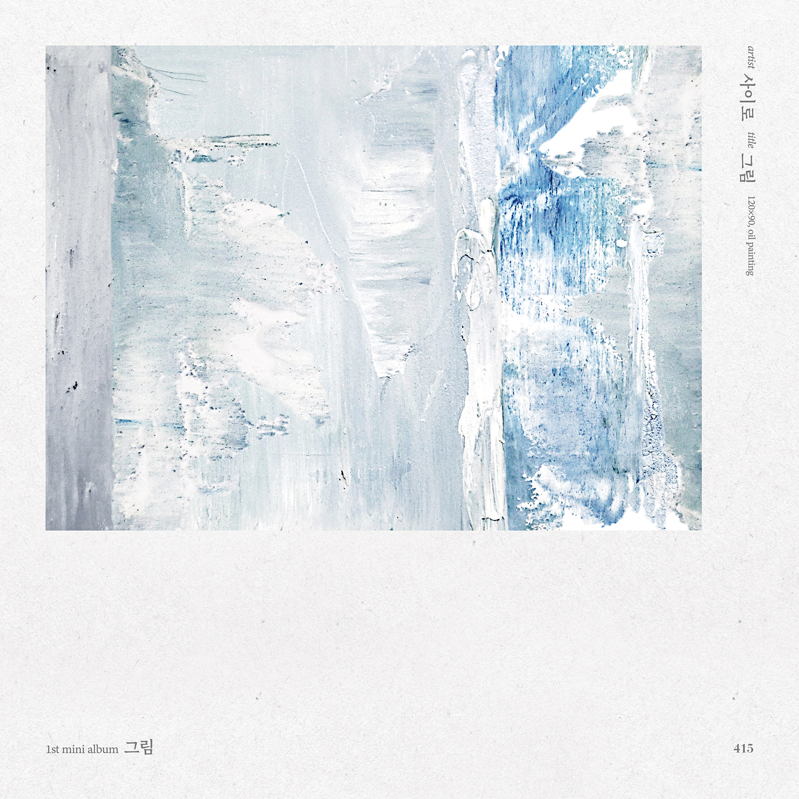

DESTINED DUO
BORN ON
THE SAME DAY
만남 사이로 오가는감정과 생각을 음악으로 표현하는감성 듀오, 사이로
사이로(415)는 4월 15일 같은 해 같은 날 태어난 운명적인 듀오로,
19년도 2월 첫 싱글 '그때, 우리 사랑했을 때' 이후 6개의 싱글 앨범과 1개의 미니앨범을 발매하며
장르에 국한되지 않고 다양한 음악을 섬세한 감성으로 풀어내며 꾸준한 성장을 다져왔다.
보고 듣는 음악을 추구하는 사이로(415)는 다양한 포토와 영상 작업을 통한
감각적인 컨텐츠 제작에 차별화를 두고 있다.
장르의 경계를 넘나드는 섬세한 보컬과 가사 표현력으로 우리에게 따듯한 위로를 건네주는
사이로(415) : destiny
19년도 2월 첫 싱글 '그때, 우리 사랑했을 때' 이후 6개의 싱글 앨범과 1개의 미니앨범을 발매하며
장르에 국한되지 않고 다양한 음악을 섬세한 감성으로 풀어내며 꾸준한 성장을 다져왔다.
보고 듣는 음악을 추구하는 사이로(415)는 다양한 포토와 영상 작업을 통한
감각적인 컨텐츠 제작에 차별화를 두고 있다.
장르의 경계를 넘나드는 섬세한 보컬과 가사 표현력으로 우리에게 따듯한 위로를 건네주는
사이로(415) : destiny
PROFILE

JANG INTAE

JO HYUNSEUNG
DISCOGRAPHY
그저 안녕
소원이 없겠다
우리 따뜻했던

그림
KEEP YOUR HOPES UP HIGH.
HIGH UP ENT.© High Up Ent. All rights reserved. Site by Fivement.
HIGH UP ENT.© High Up Ent. All rights reserved. Site by Fivement.